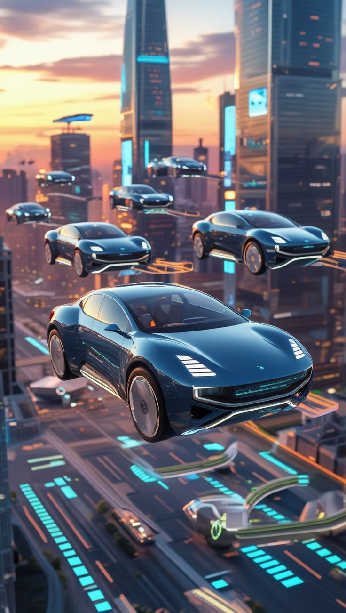

Metodología estratégica de Empresa de Base Científico-Tecnológica — MGET UAI, aplicada íntegramente al caso FYT: el AirCar eléctrico con captura activa de CO₂ de Fernanda Mesa Carrasco.
FYT es la EBCT privada de Fernanda Mesa: un AirCar eléctrico que integra un sistema activo de aspiración y captura de CO₂ en su propia estructura — reduciendo la huella de carbono global mientras vuela.
Física e Ingeniera de la Universidad de Concepción, con Magíster MGET en Gestión Tecnológica y Emprendimiento (UAI) y diplomado en Transferencia Tecnológica. Su visión: ser la primera mujer en implementar tecnología AirCar en Chile.
Teoría de Empresas de Base Científico-Tecnológica — MGET UAI, con ejemplo concreto y checklist accionable para cada paso.
{{ s.explain }}
{{ s.example }}
Marco legal completo bajo la Ley de Propiedad Industrial (INAPI) y la Ley 17.336 de Propiedad Intelectual
{{ sc.desc }}
Para TRL 2→3, costo estimado $5–15M CLP. Fuentes: CORFO Capital Semilla ($5–25M CLP), FONDEF Idea ($3–8M CLP), concursos UAI Innova, crowdfunding científico, Incuba UdeC. Matías Tapia evalúa si el laboratorio de la UdeC puede usarse sin costo adicional.